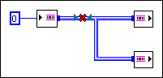

JavaScript is disabled. Details
This channel wire allows only a single writer endpoint and a single reader endpoint.

To correct this error, remove the wire branch or change the channel wire to another template that allows forking.